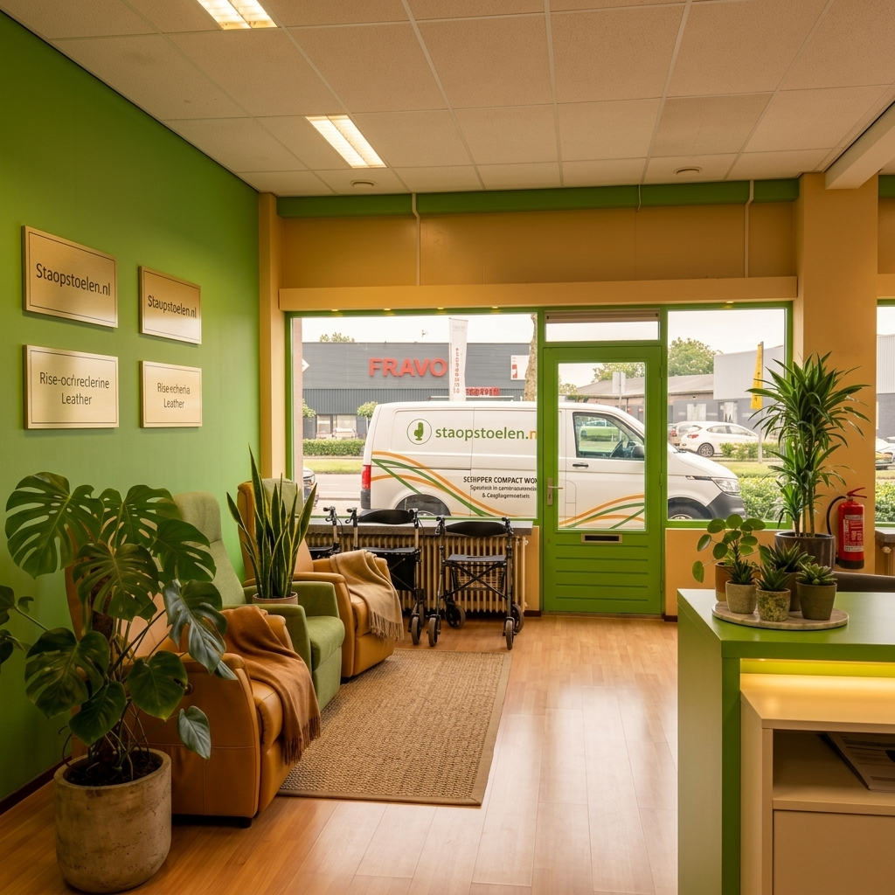
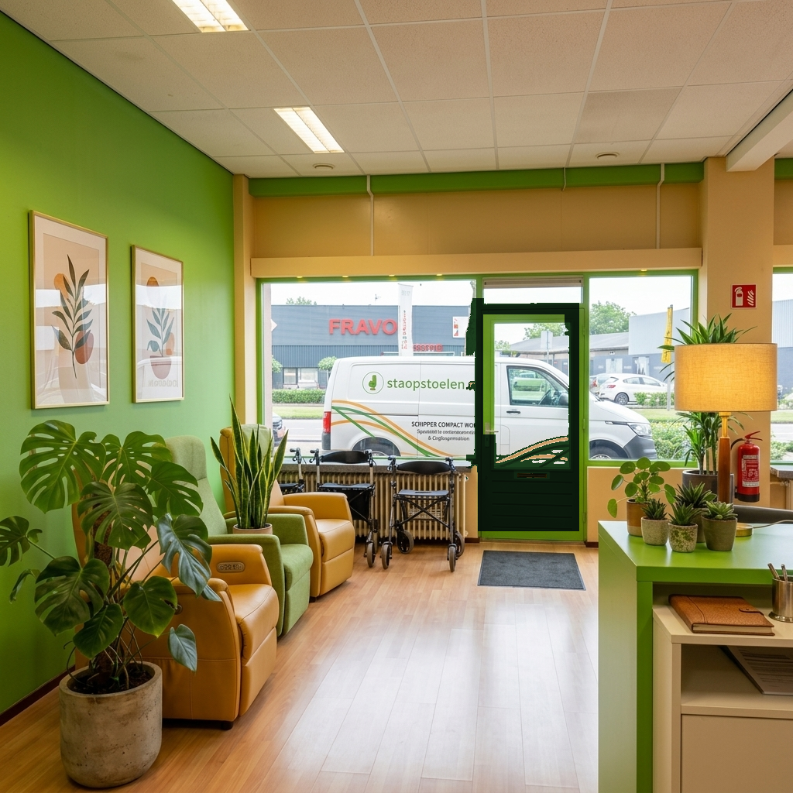

Onze Showroom
Kijkje in de Winkel
Ervaar de gezellige sfeer en gastvrijheid van onze showroom in Dordrecht.

Ervaar de gezellige sfeer en gastvrijheid van onze showroom in Dordrecht.
Welkom bij Schipper Compact Wonen aan de Merwedestraat 239. Wanneer u onze showroom bezoekt, stapt u binnen in een oase van rust, huiselijke gezelligheid en deskundigheid. Wij geloven dat het uitzoeken van een sta-op stoel of ergonomische fauteuil een prettige, ontspannen ervaring moet zijn.
Onze showroom is ingericht als een reeks sfeervolle huiskamers. Geen rijen met kille stalen meubelen, maar knusse zithoekjes met zachte verlichting, authentieke bakstenen details, warme houten vloeren en veel groene kamerplanten. Zo kunt u in een natuurlijke, vertrouwde omgeving ervaren hoe de stoel in uw eigen huiskamer zal staan.
Bovendien staat de koffie bij ons altijd vers voor u klaar. Onze zitadviseurs en Bewegingstechnologen nemen alle tijd voor u. We bespreken uw wensen onder het genot van een gezellig praatje en een warm kopje koffie of thee.
Op basis van de actuele showroom aan de Merwedestraat 239 hebben we de ideale routing en zone-indeling uitgewerkt: van de uitnodigende 'Hero' etalage aan de straatzijde tot de warme huiskamer proefzithoek en Geertjan's 5-punts zitmeetstation.
Huidig: Rollators en diverse hulpmiddelen staan direct tegen het raam, waardoor het oogt als een doorsnee zorgwinkel.
Voorstel: Een verhoogd eikenhouten podium met één 'Hero' Fitform fauteuil in warm cognac of terracotta leer, aangelicht met gerichte warme spots. Direct een kwaliteitsuitstraling voor passerende auto's en voetgangers!
Geen ingrijpende verbouwing of muren slopen, maar de bestaande winkel aan de Merwedestraat 239 met een paar slimme ingrepen direct warmer en professioneler maken. De indeling, ramen, vloeren en het vertrouwde pand blijven precies zoals ze zijn:
De kille witte achterwand en zijwanden voorzien van een zachte, warme tint (zoals vergrijsd saliegroen of warmbeige). Hierdoor vallen de fauteuils prachtig op en voelt de ruimte direct als een gezellige huiskamer in plaats van een kille showroom.
De rollators verhuizen uit het directe raamzicht naar de nis. In het venster plaatsen we één schitterende lederen fauteuil met direct zicht op de Merwedestraat. Zo ziet passerend verkeer meteen een ergonomische zitspecialist in plaats van een zorgwinkel.
Aan de bestaande wand een ingelijst Certified Fitform keurmerkbord en het 5-punts ergonomische zitmeetprotocol ophangen. Dit benadrukt Geertjan's expertise als Bewegingstechnoloog direct bij binnenkomst.



De actuele foto's van de winkel aan de Merwedestraat tonen de vertrouwde basis waarop deze verfijningen kunnen worden doorgevoerd:


U bent van harte welkom! Plan vooraf een afspraak, of kom gewoon even binnenlopen tijdens onze openingstijden (dinsdag t/m vrijdag van 10:00 - 16:00 uur).
Plan Direct Uw Bezoek